Introduction
This document sets out the ARC expert group’s current understanding of various key technical aspects of thermal comfort and wellbeing. It includes our thinking on how to increase building performance resilience in the face of intermittent power supply and problems related to the cost and availability of key building materials and mechanical services equipment. It outlines ARC’s developing building performance Standard for minimising overheating in buildings in hot, and hot and humid climates. The two-step ARC Cool Buildings Standard is conceived as being helpful for countries in climate-vulnerable regions, where there exist challenging socio-economic conditions that do not favour easily delivering new and refurbished buildings to the Passivhaus Standard in one step. The document should be used as reference for those using ARC’s educational materials on this website.
As our understanding and experience increases, this document will be regularly updated – please regularly check that you are referencing the latest version.
ARC Protocols for Cool Buildings
Success criteria for building modelling & performance.
The ARC Cool Buildings Standard success criteria are described below. They are focused on achieving all year-round thermal comfort in hot, and hot and humid climates - and on preventing dangerous overheating of buildings during heatwaves.
We also focus on indoor air quality – and the ventilation strategies and measures required to deliver that.
We also aim to minimise:
- operational and embodied energy consumption
- peak power demand
- capital and running costs
- lifetime carbon emissions
We recognise the need for the ruggedisation of strategies and as-built solutions.
Thermal Comfort
Thermal comfort is influenced by many factors that relate to the user
- clothing level
- activity level
- acclimatisation
- time spent outdoors
- expectation of the experience
- thermal history with air conditioning (either adaptive comfort use or habituation)
- etc
and that also relate to the surrounding environment
- air temperature
- radiant temperature of surfaces
- solar radiation
- air speed
- humidity
It is extremely difficult to apply both a practical and economically viable universal building standard across different socio-economic contexts, cultures and regions with different regional and micro-climates. Different combinations of thermal comfort factors also interact with climate change, social, economic and cultural factors in complex ways.
Whether a particular building design or feature will deliver adequate thermal comfort in a specific localised context can also be hard to reliably assess at concept or even detailed design stage. Designers and builders are often ‘flying blind’. Adopting ‘tried and trusted’ ways of building can sometime help. However, where evidence of effective performance of existing traditional buildings and features is hard to come by, or inconclusive, traditional approaches to designing buildings can also risk poor performance: this risk is increasing as the result of fossil fuel pollution and environmental degradation of ecosystems which has led to increasing regional and localised changes in climatic conditions. Historic or modern building methods and designs that are adequately comfortable now may not be comfortable - or even safe - in the coming years.
Climate and Weather
Changes in global and regional climates and in the frequency and intensity of extreme weather (rainfall, wind, humidity, heat and cold) are now occurring and are increasingly impacting the performance of long-lived structures such as buildings, and their occupants. This is because of both the gradual increase of average annual temperatures and significantly the increasing frequency and intensity of dangerous hot weather events such as heatwaves.
Consider incorporating here a graph showing increasing temps/heatwave temps to illustrate this point from a key baseline period
Building performance is typically reported relative to the ‘current climate’ - which is changing globally, with changes varying regionally and locally. The current climate is defined according to measured conditions over an agreed period of time – typically 30 years. Different time periods or benchmarks are used for different purposes and may or may not be universally used across governments and organisations.
Can we list the ‘current climate’ benchmarks used globally here?
Benchmarks are periodically updated – the UK’s Met Office has recently updated UK regional benchmarks for heatwaves as a result of the changing climate (note that different regions have different benchmarks to reflect regional variations in climate).
ARC therefore recognises that building performance is most usefully assessed relative to the ‘current climate’ in any particular climate zone, climate region or even relative to the climate in a very specific locality.
Because of faster than predicted climate change, performance now urgently needs to be assessed relative to both current and predicted future extreme weather events, particularly extremes of heat and humidity – heatwaves.
Adaptive comfort, 3-zone strategy for resilient cool buildings
The ARC approach focuses on achieving practical, affordable technology-assisted, natural-ventilation solutions for creating cool buildings.
ARC Guidance
The guidance promotes building design and specifications that result in performance more likely to be maintained over the longer-term, factoring in rapidly changing climates.
It helps establish and articulate for building owners clearer building management, investment and improvement pathways, whilst anticipating increasingly extreme weather events including disruption to electricity supplies – focusing specifically on heat and humidity inside buildings.
ARC considers more realistic socio-economic contexts and scenarios, which for new and existing buildings tend to favour smaller, phased building investment and measures. Typically, this means incremental, room by room improvements over time - as required and when finances allow. The overall aim is to collaborate to develop solutions for uptake at ‘pace and scale’.
- Educational material promoting understanding of building science, specifically for hot, cooling-dominated climates
- A practical ‘pattern language’ library, sharing co-created design solutions
- Sharing exemplar projects to inspire and inform.
ARC’s Cool Buildings Framework
This draws on live environmental condition monitoring of real projects, and peer reviewed science of adaptive comfort and incorporates a three-zone building design strategy.
The framework is designed to support the ability of building occupants to manage their health and comfort via simple, robust, ‘adaptive behaviour’, as local climates worsen and extreme weather increases in intensity and frequency. It focuses designers on solutions that future-proof buildings to allow easier, more cost-effective future measures such as glazing, insulation, airtightness, mechanical cooling, ventilation and dehumidification – when required, over time.
Comfort criteria, temperature thresholds and tools include:
- A standardised, humidity-adjusted adaptive comfort model-based tool that provides key humidity adjusted temperature thresholds for comfortable, healthy and safe conditions in building spaces. The standardised thresholds can be adjusted for local conditions as required using localised comfort survey data
- Simplified, evidence-based temperature limits for spaces within buildings
- A three-zone building design strategy.
Comfort model
Simplified Temperature limits
Three-zone strategy
All zones should be:
secure, insect-protected, well-shaded, and naturally ventilated. Cooling comes mainly from effective cross-ventilation, which creates air movement, with electric ceiling or wall fans used when extra cooling is needed.
Zone 1
Performance requirements
Zone 2
Performance requirements
A “heat Refuge” large enough for all building occupants - a dedicated room or zone for use during extreme heatwaves. This space may include some mechanical cooling, if it relies on mechanical cooling needs to continue to operate during power cuts.
Zone 3
Performance requirements
Step 2 usually results in a higher-cost building that incorporates mechanical cooling (air conditioning), mechanical dehumidification if required, and mechanical ventilation for use when air conditioning is running. Importantly, the building is designed to operate in both modes: mechanical cooling mode, and electricity-free, naturally ventilated “free-running mode” when conditions allow.
A Step 2 building is therefore a “multi-mode” Cool Building, with all key areas able to function as a mechanically cooled heat Refuge when necessary.
Step 1: Meeting everyday comfort needs
Claiming the ARC standard has been achieved requires measured performance data to demonstrate that, under normal circumstances, building zones 1 & 2 remain comfortable 90% of the time i.e. that the key upper temperature thresholds have not been breached for more than 10% of the time each year. In addition, that the heatwave temperature threshold of 32C for interior air should also not be breached during heatwaves, for building zones 1 & 2. These criteria do not apply for spaces in building zone 3. The comfort model that is used will depend on the location. With hundreds of local surveys conducted, based on the adaptive comfort method worldwide, many countries have identified what is found to be comfortable for their local populations, with some countries e.g. India incorporating it into an official standard. Where these local survey results are available, projects owners can show that their building meets localised comfort expectations. It's important that the local study used matches the project’s specific context as much as possible. For example, a comfort study carried out of residents in naturally ventilated houses would not be appropriate to be applied to assessing the performance of a centrally airconditioned office tower in the city centre. This is due to the differing expectations, acclimatisation (to unconditioned vs. conditioned spaces) and occupants' differing levels of control and opportunities to adapt their environment. However, the study might be used to assess deigns for naturally ventilated office space where occupants have desk-fans and relaxed dress codes. The ARC website provides a database of these studies, with toolkits to show compliance.
For countries where a local model is not available, ARC has developed simple ‘success criteria’ to guide designers and builders. These are based on standard comfort models but informed by a ‘designer-friendly relative humidity-inclusive’ adaptive comfort model that ‘significantly extends the range of acceptable indoor conditions for designing low-energy naturally conditioned buildings all over the world’.
This is the approach that ARC applies when assessing the performance of buildings, the aim being to present building performance consistently across ARC’s Cool Buildings programme.
The humidity-inclusive comfort model, researched by Marika et al, is based on 63 studies in 13 countries with hot climate regions. The principal benefit of the model is that it acknowledges that more humid climates require more stringent comfort standards, because the human body's ability to sweat is diminished in more humid climates. The acceptable range for comfort in the comfort model allows for projects in different locations to adopt a bespoke target based on local humidity levels. This safely widens the applicability, range and accuracy of the ARC Cool Buildings approach: in their published research, the researchers show that the widely adopted ASHRAE method overestimates overheating by 30%.
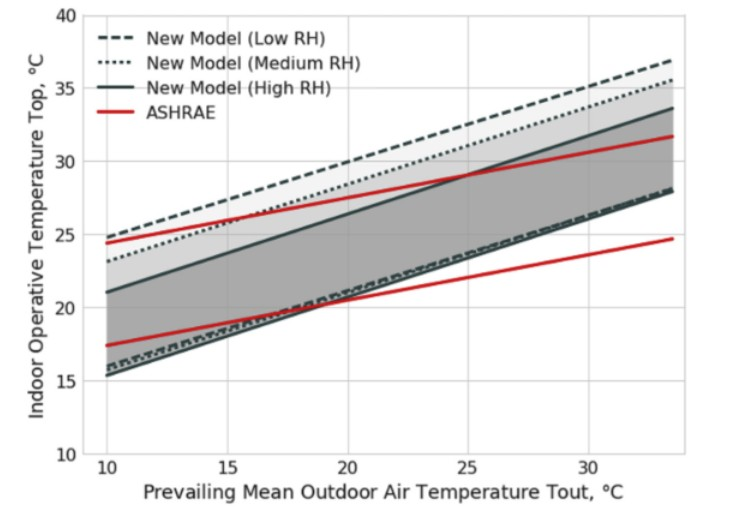
Figure ##: Marika et al: The influence of relative humidity on adaptive thermal comfort.
Using the measured performance for a 10-person communal domestic accommodation building, built in Tanzania in 2023 we can illustrate how the building performs against ARC’s success criteria, see Fig## below.
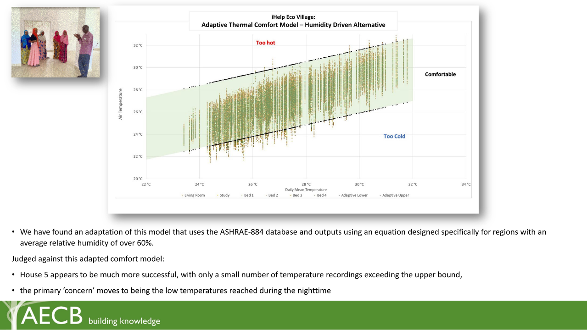
Figure ##: measured data from 2024 – 2025, courtesy of Simmonds.Mills LLP, Huda Elsherif, Archie Worthington
In the above illustration the graph’s vertical axis shows dry bulb air temperature only - not the combined effects of radiant and air temperature (operative temperature). Operative temperature (weighted average of dry bulb air temperature and mean radiant temperature) is technically he correct metric for demonstrating building performance using this model. Where operative temperature can be calculated (from monitoring of room radiant temperatures using black bulb thermometers) then the graph can be improved for accuracy by using operative temperature. A further complication may arise where radiant temperatures are extremely asymmetrical – for example certain parts of a room, such as windows or some areas of ceiling are especially hot. Theoretically more sensors would be required to pick up this thermal asymmetry and more analysis associated with understanding the impact on occupants. However, where sufficient data is not yet available, and to avoid ‘analysis paralysis’, use air temperature as a proxy for operative temperature, if necessary; use operative temperature in preference if suitable monitoring data is available, and where possible factor in radiant asymmetry where detailed monitoring and analysis is being carried out.
Physiological adaptation to heat
People adapt to their local environment in the short term, by adjusting their behaviour and clothing to the outdoor environment they’ve experienced recently. Some adaptive comfort models reflect this by taking the average mean temperatures in the past month as an indicator of predicted comfort temperatures, like the ASHRAE model. However, studies have shown that after only 7 days human adaption to changes in outdoor temperatures is significantly reduced (see Figure # below). Instead, the running mean is a more accurate indicator. The running mean temperature is an average of the temperatures in the last week; however, the model puts more emphasis on more recent days than earlier days. This is because you are more likely to be impacted by the temperatures from yesterday than 6 days ago. This is in line with the European standard method set out in Standard EN 15251.
Where localised survey information is available which uses both methods, the running mean figures should be used in preference. The ARC Cool Buildings toolkits provided will build in this preference. The tools will only require the user to input the hourly outdoor temperatures, and the internal temperatures that were recorded. To demonstrate building performance using the comfort model it is therefore necessary to have access to measurements of both the internal and outdoor humidities and temperatures inside and outside of your building. Ideally, internal and external temperature measurements should be recorded on an hourly basis via data loggers placed in permanently shaded spots. The external data logger outside the building, should also be both well shaded and also protected from rain.
Where this measured data is not available data from other sources, as local as possible could be used – for example publicly available airport weather data or from other publicly managed weather stations. An airport is likely of course have a different temperature profile than the building and surroundings, because airports are typically located in open landscapes and may or may not be impacted by the urban heat island effect.
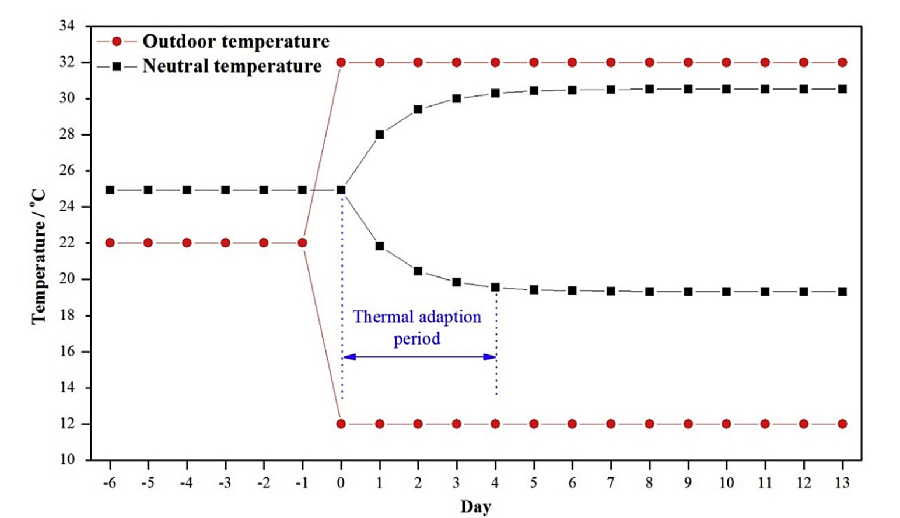
Figure 3 [Cite source]
Step 2: Comfort at the extremes
Step 2 in the ARC approach is intended to ensure more comfortable conditions during heatwaves.
Heatwaves are defined as periods of extreme heat, typically expressed using dry bulb air temperature for ease and simplicity of communication to the general public.
[Cite source for tropical heatwaves]
However, organisations increasingly factor in humidity (and often radiant temperature and wind effects as well) to help warn on heatwave conditions where these combined effects may cause risks to human health: for high-risk occupations e.g. working outside, military personnel, construction workers, workers operating dangerous machinery or for higher risk demographics such as babies or older people, or people in poor health. This expresses temperatures for hot weather as a ‘feels like’ value, or ‘heat index’.
Heatwaves often come with power cuts as power grids struggle to handle the demand of people turning on their air conditioning. In line with the need to manage this increasing risk, ARC’s approach is to design for operational resilience, to safely manage interruptions to energy supplies, typically electricity supply, whilst continuing to provide thermal safety and wellbeing during power outages. This requires simple and robust ‘passive’ designs for buildings. The same principle of simplicity and robustness applies to the building services equipment, for example the use of standardised or locally made and repairable equipment and components, and adequate access to local and affordable skills and services, along with business and authorities building and maintaining suitable and reliable supply chains.
Heatwaves pose serious risks to people’s health and wellbeing and limit their daily lives at work and at home - as in order to manage heatwaves and even survive, managing and reducing heat stress becomes the sole focus. Therefore, it is important to ensure that people have access to at least one space at home, at work and in community settings for practical use and Refuge during heatwaves. Let’s call this the ‘Heat Refuge’.
We recommend two thresholds:
Temperatures in Heat Refuges
The Heat Refuge is a cooler, sheltered space which building occupants are able to use for extended periods during heatwaves, and which stays below certain temperature limits even when electrical mains power cuts out. The Heat Refuge may be a single space or may be a zone including several rooms in a building.
- Designers and builders must ensure that during extreme heat events the Heat Refuge remains below 32-35oC through passive (non-mechanical) design measures
- Orientation – to minimise the amount of time direct sun heats the walls, roofs and floors and external surroundings. Typically, this involves aligning the longest /largest external faces of the building to face north and south (in hot climates the sun is higher in the sky to the north and/or south during the day) and aligning the narrow/smallest faces of the building to face east and west (the sun is lower in the sky to the east and west, and more sunlight falls on east and west facing walls and windows. Good solar orientation of a building is an extremely effective way to reduce the amount of heat from the sun from getting into a building.
- Shading to walls and windows include
- extending the roof edges to extensively shade walls and windows and even shade external ground areas around the building is highly effective at keeping buildings cool.
- Adding lean-to or canopy roofs against walls
- Tops and side of windows can be shaded using various features fixed to the walls
- ventilated window shutters (on the outside of the window)
- ventilated shading louvres within the window opening
- externally positioned perforated security screens (Mashrabiya)
- Reflective surfaces – brilliant white (the most reflective) or paler colours help reflect the suns heat away from the building’s roof and walls. This is particularly important where there is no ceiling in the room, and occupants are exposed to the radiant heat coming off metal roof sheets. It also works well to reduce heat being radiated onto (and through) any e.g. plasterboard or concrete ceilings below. Keeping ceilings cooler is important.
- Heat shedding roofs – heat builds up quickly in enclosed roof spaces, - if the hot air cannot escape from the roof space it transfers its heat to the ceiling materials, making the ceilings hotter. Heat is then radiated from the ceilings onto the occupants below. Provide ventilation to the roof space at the eaves, allowing cooler air in, and have dedicated areas that let the hot air out of the roof towards the top of the roof, also designed to keep the rain out.
- Use the window openings to provide air movement for cooling breezes. Make sure window openings are large enough to allow a high level of air movement. Ventilated shutters, louvres or venetian blinds can be used to increase or decrease how much air passes through a window – i.e. air movement can be controlled by the occupants. The important thing is to avoid sizing the openings to be too small in the first place, and to make sure they are placed on opposing walls of the space, or at least on adjacent walls – rooms with a single window should be avoided. This also requires windows to be placed carefully, to provide cross-ventilation - ideally openings of equal size on opposing sides of spaces to allow the free flow of air across the space. If the space is to be sub-divided with an internal wall, consider making the partition ‘perforated’ to avoid blocking air movement from the window thereby improving cooling cross ventilation. Lowering the window cills of windows provides better cooling by allowing air to pass across more of the body area of occupants, standing, sitting or lying inside on windows also works well. Creating openings in ceilings ‘to let hot air rise out of the room’ is not generally considered to be very effective in domestic buildings and may allow more heat into the space than it lets out – treat this potential passive measure as ‘experimental’ at this time.
- Draughtproof glazed windows for when air conditioning is turned on - inward-opening casement windows or glazed bifold patio-doors will be needed for the operation of the Heat Refuge in two modes – natural ventilation mode and air conditioning mode. In natural ventilation mode, the casements are open, to allow for full opening of the window area for effective cross ventilation. Fitting an insect mesh screen across the window opening is necessary for areas with mosquitoes. This typically reduces airspeed (the critical factor for cooling the body is the speed of the air movement) through the window by about 50%. The glass areas of sliding type glazed windows typically occupy 50% of the opening area of the window and the insect mesh areas of these windows slow air movement by 50% - so the reduced distribution of cooling breeze across occupants’ bodies when using sliding type glazed windows needs to be considered carefully by designers and builder.
- powered fan(s)
- lighting
- power socket(s)
- If an adequate mains power supply is available, this space should also be fitted with mechanical cooling, but passive measures must be favoured to anticipate maintaining cool temperatures during power cuts.
The reason for installing air conditioning in the Heat Refuge is that in places where power cuts are anticipated or even scheduled, occupants can pre-cool a room with the air conditioner and rely on the good design of the space to preserve that coolth for as long as possible during the power cut.
For a room (or rooms) in a hot dry climate with adequately cool nights, this means that well shaded, high thermal mass, cooled at night by natural ventilation via large openings is important.
In a hot humid climate, the room (or rooms) should be provided with the following features
- Additional wall, floor and/or ceiling insulation - to preserve the coolth.
Temperatures of transient spaces during heatwaves
These are spaces that people need to use for more than an hour each day like kitchens, bathrooms and corridors. These spaces should not exceed the human limits for temperature. This limit is exceeding an air temperature of 40oC is in a hot dry climate. For hot humid climates a wet bulb temperature of 32-34oC is the limit of human capacity.
Resources
ASHRAE global database of thermal comfort field measurements
https://datadryad.org/dataset/doi:10.6078/D1F671
Research reference: Development of the ASHRAE Global Thermal Comfort Database II: https://www.sciencedirect.com/science/article/pii/S0360132318303652#fig
Outstanding research questions
When is it too hot to cool using fans?
Central question: when does a fan become ineffective, or counterproductive at cooling people in hot humid climates?
(over) Simplified answer:
- when the air temperature exceeds the skin temperature, additional air flow will serve to add heat to the body, rather than remove it. Skin temperature is around 32-35C, so this could be taken as the upper limit for effective use of fans.
Key insight: a fan becomes ineffective when the evaporative cooling benefit is outweighed by the convective heating from warm air.
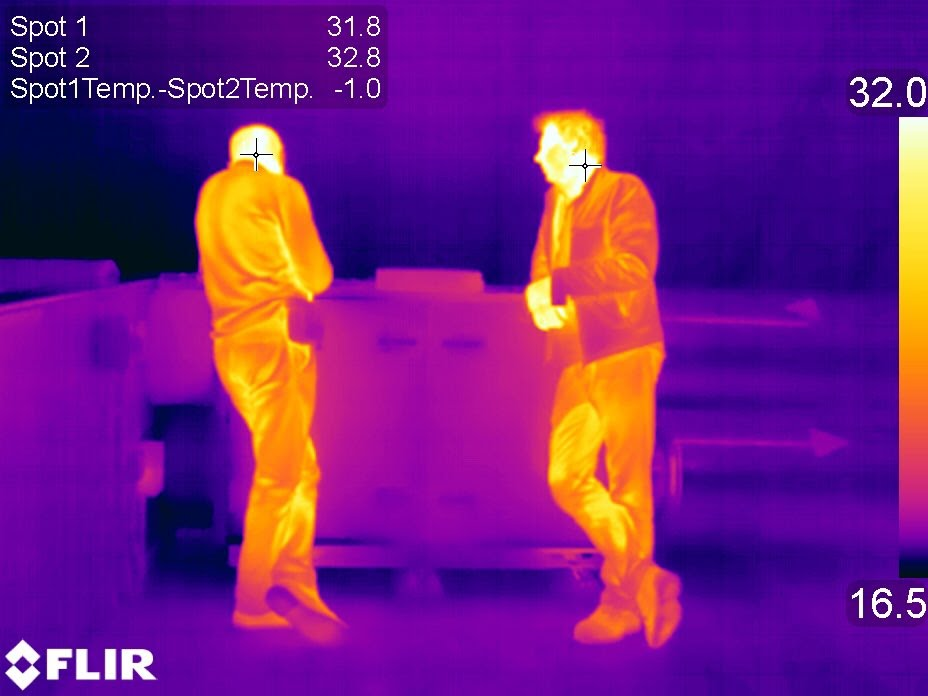
Missing mechanisms in this solution: The role of sweating and interaction with humidity. Sweating efficacy is affected by humidity (and, therefore temperature). The physical parameter that ‘drives’ evaporation, and hence latent cooling, is vapour pressure difference. The saturation vapour pressure at 32 degrees (i.e. approximate surface VP at skin with a film of sweat is 4.76 kPa. The VP of air at 32C, 80% RH (possible design/typical conditions in Tz?) is 3.84 kPa. Hot/arid design conditions of e.g. 40C, 25% = 1.95 kPa (maybe less – can’t remember what RH we took as typical). The delta-VP is therefore 0.92 kPa in Tz, and 2.81 in the hot/arid climate. This suggests that potential for latent cooling via sweat in the hotter (but drier) climate is 3-4 times that of Tz. Sweat/latent cooling is therefore an important element of a proper answer to this question.
I am thinking about the problem as a ‘simple’ air flow over a flat plate or pool of water type problem. This disregards a number of (potentially important) variables such as clothing, differing air flow around the geometry of the body, whether standing, seated, lying down etc. This is something of a Spherical Cow in a Vacuum analysis – but I think will create a useful frame of reference and order-of magnitude level of accuracy in terms of an answer.
Consider a flat plate with a film of water, with air flowing over it. In the first instance let us assume the airflow is laminar. We will take the air T, RH and free-field velocity away from the plate (i.e. undisturbed velocity) as variables. There is heat transfer between the plate and airstream, which depends on the delta-T and the effective thermal transfer coefficient that results from the incoming hot air ‘replenishing’ the air that has been slightly cooled by giving up its heat to the skin, or vice-versa in a cooling situation. Secondly, there is some latent cooling due to the evaporation of the film of water into the airstream. Crucially, whereas the sensible gain (i.e. transfer of heat by conduction/convection) flips when the air temperature exceeds that of the skin, the latent loss is always positive, i.e. there is always a flux of heat out of the body due to latent cooling, but the extent depends on the vapour pressure difference (inversely proportional to ambient humidity in a non-linear way)
If I can figure out the equations for the sensible and latent processes, we can (in a spherical cow in a vacuum sense) solve for the velocity at which air flow tips from being beneficial to detrimental in terms of cooling.
The skin boundary condition needs refinement – picking a ‘typical’ skin temp is a sensible place to start but we can do better. I want my model to take the skin as a boundary condition, defined as either:
A heat flux of e.g. 100W metabolic (average human output) divided by ~1.9m2 (average area of human skin)
A core temperature (37.5C?) and an effective thermal resistance, representing the ‘conductance’ of the skin, layers of fat and muscle, and the transfer of heat via capillaries etc.
[AS]: I have read that only 85% of heat transfer is via the skin, e.g. that doesn’t include heat loss/gain via breathing (sensible and latent transfer via lungs). How do you factor in/contextualise the other 15%?
I think we could write limiting air velocity as a function of temperature and humidity, and therefore e.g. plot it on a psychrometric chart (as a 3D projection with a psychrometric chart on the x-y plane.
Other/Subsequent thoughts:
There is an upper limit to how much sweat the skin can produce – Wikipedia says 2 -4 litres per hour total for an adult. Skin area is about 1.9m2 for an adult, so 1.6 L/m2.h some areas of the body produce more sweat than others, as well as there being person-to-person variation.
The actual temperature of the skin is an important variable
Radiant heat is another important factor, especially in the context of whether the limit applies indoors or outdoors. [AS]: I think we should focus our work on indoor environments.
Here’s a conversation I started with Claude:
help me write an expression for the rate of evaporation from a pool of water, into a laminar stream of air, as a function of the temperature, humidity and free-field velocity of the air.
This is a classic mass transfer problem in fluid mechanics and heat/mass transfer. The user is asking for an expression for evaporation rate from a water surface into a laminar air stream. This involves convective mass transfer.
The key parameters they've mentioned are:
Temperature of the air
Humidity of the air
Free-field velocity of the air
For evaporation from a surface into a flowing fluid, we typically use the mass transfer coefficient approach. The basic form is:
Rate = mass transfer coefficient × area × concentration difference
For evaporation specifically, this becomes: Rate = h_m × A × (C_sat - C_bulk)
Where:
h_m is the mass transfer coefficient
A is the surface area
C_sat is the saturation concentration at the surface
C_bulk is the bulk concentration in the air stream
The mass transfer coefficient for laminar flow over a flat plate can be related to dimensionless numbers like the Sherwood number, which depends on Reynolds and Schmidt numbers.
Let me structure this properly, considering:
The driving force (vapor pressure difference)
The mass transfer coefficient for laminar flow
How temperature, humidity, and velocity affect each component
I should provide both the theoretical foundation and practical expressions.
I'll help you develop an expression for the evaporation rate from a water pool into a laminar air stream. This is a convective mass transfer problem that depends on the driving force and mass transfer coefficient.
Basic Expression
The evaporation rate can be expressed as:
ṁ = h_m × A × (ρ_v,sat - ρ_v,∞)
Where:
ṁ = evaporation rate (kg/s)
h_m = convective mass transfer coefficient (m/s)
A = water surface area (m²)
ρ_v,sat = saturated vapor density at water surface (kg/m³)
ρ_v,∞ = vapor density in free stream air (kg/m³)
Mass Transfer Coefficient for Laminar Flow
For laminar flow over a flat plate, the average mass transfer coefficient is:
h_m = (D_AB/L) × Sh_avg
Where the average Sherwood number for laminar flow is: Sh_avg = 0.664 × Re_L^0.5 × Sc^0.333
Parameter Dependencies
Temperature Dependencies:
Saturated vapor density: ρ_v,sat = (P_sat(T)/RT) where P_sat follows Clausius-Clapeyron relation
Diffusivity: D_AB ∝ T^1.75/P
Air properties: ν and ρ vary with temperature
Humidity Dependencies:
Free stream vapor density: ρ_v,∞ = φ × ρ_v,sat(T_∞)
φ = relative humidity of air stream
Velocity Dependencies:
Reynolds number: Re_L = U_∞L/ν
Higher velocity → higher Re → higher Sh → higher h_m
Complete Expression
Combining these relationships:
ṁ = (0.664 × D_AB/L) × (U_∞L/ν)^0.5 × (ν/D_AB)^0.333 × A × [ρ_v,sat(T_surface) - φ × ρ_v,sat(T_∞)]
Simplifying: ṁ = 0.664 × A × (D_AB × U_∞/νL)^0.5 × ν^0.333/D_AB^0.333 × [ρ_v,sat(T_surface) - φ × ρ_v,sat(T_∞)]
Practical Form
For engineering calculations, this is often written as: ṁ = K × A × U_∞^0.5 × [P_sat(T_surface) - φ × P_sat(T_air)]
Where K incorporates the physical properties and geometric factors.
Would you like me to elaborate on any specific aspect, such as the property correlations or how to handle non-isothermal conditions?
TC: Great. I'm actually interested if the dynamics of cooling of the skin, from first principles (the pool of water is an idealised film of sweat, which we can refine later). I'm ultimately trying to understand under what conditions (T and RH) a fan becomes ineffective for cooling. I also want an expression for the transfer of heat from the same stream of air into the pool of water, where the temperature may be higher or lower than the water. We need to take into account the effect of latent cooling. I suggest that initially we consider the surface of the water as a boundary condition with either a) heated at constant rate (representing metabolic heat), or b) a temperature representing the body core, with an effective thermal resistance.
This is a really interesting problem that connects evaporative cooling, convective heat transfer, and the human thermal system. Toby is looking at the fundamental physics of skin cooling through evaporation and convection, which is quite relevant to building physics and thermal comfort.
Let me think through this systematically:
We have a water film (sweat) on skin
Air flow over it with temperature T_air, humidity φ, velocity U
Heat transfer mechanisms:
Convective heat transfer from air to water surface
Evaporative heat loss from water surface
Heat conduction from body (either constant rate or from core temperature through thermal resistance)
The key insight is that a fan becomes ineffective when the evaporative cooling benefit is outweighed by the convective heating from warm air.
For the heat balance on the water surface:
Heat input from body: Q_body
Heat input from convection: Q_conv = h_c × A × (T_air - T_surface)
Heat loss from evaporation: Q_evap = ṁ × h_fg
At steady state: Q_body + Q_conv = Q_evap
The fan becomes ineffective when Q_conv becomes positive and large enough that the total cooling is reduced.
Let me structure this properly with the two boundary conditions he mentioned.
Excellent! This is a fascinating problem that gets to the heart of human thermal comfort. Let me develop the coupled heat and mass transfer analysis for skin cooling.
Heat Balance on Water Film Surface
At the water surface, we have three heat transfer mechanisms:
Q_body + Q_conv = Q_evap
Where:
Q_body = heat supply from body
Q_conv = h_c × A × (T_air - T_surface) = convective heat transfer
Q_evap = ṁ × h_fg = evaporative cooling
Evaporative Heat Loss
From our previous evaporation analysis: Q_evap = h_m × A × h_fg × [ρ_v,sat(T_surface) - φ × ρ_v,sat(T_air)]
Convective Heat Transfer
Using the heat-mass transfer analogy (both scale with Re^0.5 for laminar flow): h_c = h_m × ρ_air × c_p × Le^0.667
Where Le = Lewis number = α/D_AB ≈ 0.8-1.0 for air-water vapor.
For practical purposes: h_c ≈ h_m × ρ_air × c_p
Boundary Conditions
Case A: Constant Heat Rate (Metabolic Heat)
Q_body = q_met × A (constant)
Heat balance becomes: q_met × A + h_c × A × (T_air - T_surface) = h_m × A × h_fg × [ρ_v,sat(T_surface) - φ × ρ_v,sat(T_air)]
Case B: Core Temperature with Thermal Resistance
Q_body = (T_core - T_surface)/R_th
Heat balance becomes: (T_core - T_surface)/R_th + h_c × A × (T_air - T_surface) = h_m × A × h_fg × [ρ_v,sat(T_surface) - φ × ρ_v,sat(T_air)]
Critical Condition: When Fans Become Ineffective
The fan becomes ineffective when ∂Q_evap/∂U < 0 (increasing fan speed reduces net cooling).
Since both h_c and h_m scale with U^0.5:
Evaporative cooling: ∝ U^0.5 × [ρ_v,sat(T_surface) - φ × ρ_v,sat(T_air)]
Convective heating: ∝ U^0.5 × (T_air - T_surface)
Critical condition occurs when: h_fg × [ρ_v,sat(T_surface) - φ × ρ_v,sat(T_air)] < ρ_air × c_p × (T_air - T_surface)
Simplified Critical Analysis
For a rough estimate, using the psychrometric relation: ρ_v,sat ≈ 0.622 × P_sat/(R_air × T)
The critical condition becomes approximately: T_air > T_surface + (h_fg/c_p) × (P_sat(T_surface)/P_atm) × (1 - φ) × (P_sat(T_air)/P_sat(T_surface))
This shows that high humidity (φ → 1) and high air temperature make fans ineffective.
Would you like me to:
Develop the complete coupled solution for either boundary condition?
Derive specific criteria for when fans become counterproductive?
Include the effect of radiation heat transfer?
Analyse the transient cooling dynamics?
This framework should give us the foundation to understand exactly when and why fans stop providing cooling benefit!
<terminate brain dump>
Radiant asymmetry in hot weather/hot climates
… the effect of hot surfaces on perception of “warm stuffy conditions”. Nick Grant (NG) provides example conditions: RH c.50%, air 23°C, CO2 c. 500ppm (“windows opened because of ‘stuffiness’ whilst MVHR working fine”). “Definitely felt stuffy but air temperature not high.” NG: “Also experienced in schools, a cafe in a care home (not PH but all tables had been moved away from warm glass and cold drafts from the aircon.) As it says in attached (abstract) it must be sensitivity to asymmetry as the MRT was not very high at all as far as I could tell. More sensitive than winter case, I think. In the UK it is the glass, but warm ceilings will be significant in other situations. More research needed.”
Related information: unpublished abstract by NG (PHI’s Wolfgang Hasper also looking into it and “it is complex”.)
HEls: “Yes, I agree, especially the idea of warm ceilings for houses with metal sheet roofing. There is also metal doors and windows too that feel like standing next to an iron (when unshaded). But as we mentioned in meeting, the issue with radiant heat is the availability of technology to capture it. How likely is it that people would have access to a thermal camera? At best, we could add guidance on how to avoid it or PHPP becomes more adept to hot climates (as Nick said) and we adopt that.”
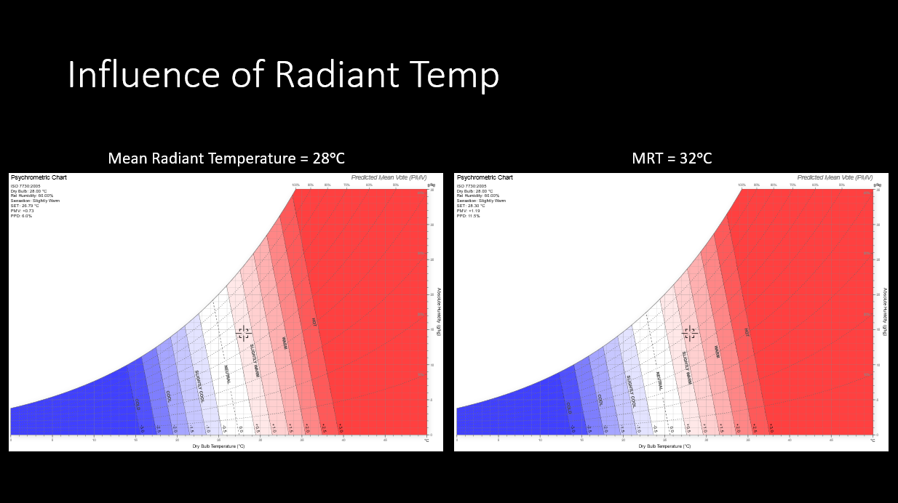
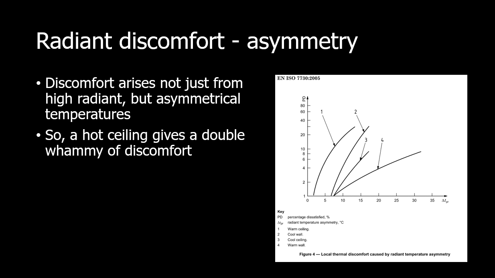
So, my supervisor (who specialises in thermal comfort outdoors) said that for indoor spaces, the air temperature isn't typically that different to the radiant temperature. So, we can use air temperatures on site as a 'good enough' measure.
However, design wise, you can easily get operative temperatures in the software simulations. So, we could say that teams should aim to design for operative temperature comfort levels.
Also a few anecdotes :
1. For the Tanzania simulations, I could calibrate the rooms easily but couldn't calibrate the roofs because the roofs had too much radiant heat that the data loggers weren't capturing. So, a space that is that exposed to solar radiation would have a big difference between operative and air temp. A well shaded one would have a smaller difference.
2. In a recent UK project, when I set the cooling set point to 26oC air temp, some rooms failed the adaptive overheating test where temperatures have to be below 26, because they use the operative temp as a criterion. (it was a small fail but just shows that it does have an impact)
Appendix 1: measuring thermal comfort
Dry Bulb Temperature - Tdb
The Dry Bulb temperature, usually referred to as "air temperature", is the air property that is most commonly used. When people refer to the temperature of the air they are normally referring to the dry bulb temperature.
The Dry Bulb Temperature refers basically to the ambient air temperature. It is called "Dry Bulb" because the air temperature is indicated by a thermometer not affected by the moisture of the air.
Dry-bulb temperature - Tdb, can be measured using a normal thermometer freely exposed to the air but shielded from radiation and moisture. The temperature is usually given in degrees Celsius (oC) or degrees Fahrenheit (oF). The SI unit is Kelvin (K). Zero Kelvin equals to -273 oC.
The dry-bulb temperature is an indicator of heat content and is shown along the bottom axis of the psychrometric chart or along the left side of the Mollier diagram. Constant dry bulb temperatures appear as vertical lines in the psychrometric chart or horizontal lines in the Mollier diagram.
Wet Bulb Temperature - Twb
The Wet Bulb temperature is the adiabatic saturation temperature.
Wet Bulb temperature can be measured by using a thermometer with the bulb wrapped in wet muslin. The adiabatic evaporation of water from the thermometer bulb and the cooling effect is indicated by a "wet bulb temperature" lower than the "dry bulb temperature" in the air.
The rate of evaporation from the wet bandage on the bulb, and the temperature difference between the dry bulb and wet bulb, depends on the humidity of the air. The evaporation from the wet muslin is reduced when air contains more water vapor.
The Wet Bulb temperature is always between the Dry Bulb temperature and the Dew Point. For the wet bulb, there is a dynamic equilibrium between heat gained because the wet bulb is cooler than the surrounding air and heat lost because of evaporation. The wet bulb temperature is the temperature of an object that can be achieved through evaporative cooling, assuming good air flow and that the ambient air temperature remains the same.
By combining the dry bulb and wet bulb temperature in a psychrometric chart or Mollier diagram the state of the humid air can be determined. Lines of constant wet bulb temperatures run diagonally from the upper left to the lower right in the Psychrometric chart.
Dew Point Temperature - Tdp
The Dew Point is the temperature where water vapor starts to condense out of the air (the temperature at which air becomes completely saturated). Above this temperature the moisture stays in the air.
if the dew-point temperature is close to the dry air temperature - the relative humidity is high
if the dew point is well below the dry air temperature - the relative humidity is low
If moisture condenses on a cold bottle taken from the refrigerator the dew-point temperature of the air is above the temperature in the refrigerator.
The Dew Point temperature is always lower than the Dry Bulb temperature and will be identical with 100% relative humidity (the air is at the saturation line). As air temperature changes the Dew Point tends to remain constant unless water is added or removed from the air.
The Dew Point temperature can be measured by filling a metal can with water and some ice cubes. Stir by a thermometer and watch the outside of the can. When the vapor in the air starts to condensate on the outside of the can, the temperature on the thermometer is pretty close to the dew point of the actual air.
The Dew Point is given by the saturation line in the psychrometric chart.
Source: https://www.engineeringtoolbox.com/dry-wet-bulb-dew-point-air-d_682.html
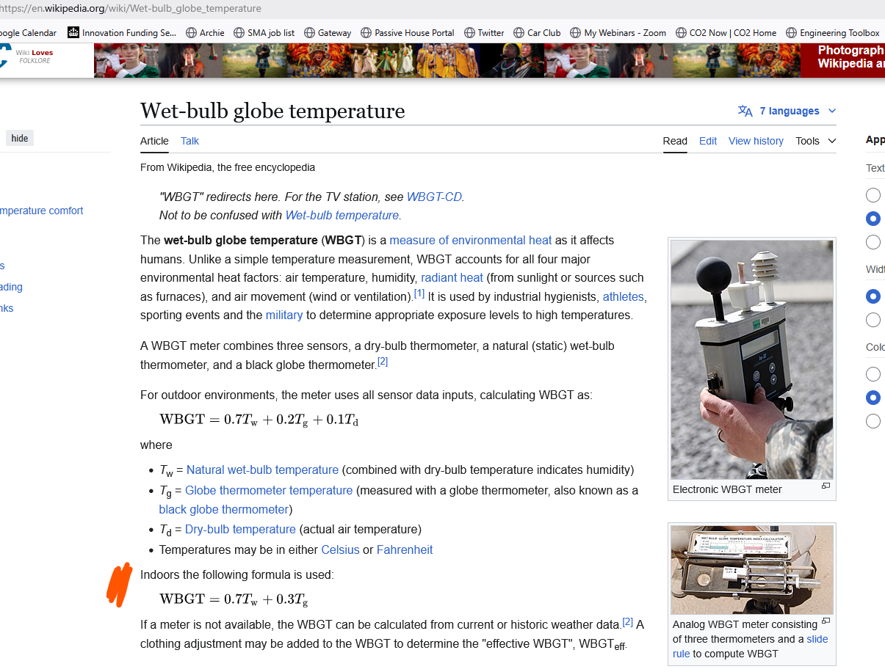
Source: https://en.wikipedia.org/wiki/Wet-bulb_globe_temperature
Heat Index
And Heat Index (a news channel utilised format that may confuse when considering our adopted comfort model) https://en.wikipedia.org/wiki/Heat_index
“The heat index (HI) is an index that combines air temperature and relative humidity, in shaded areas, to posit a human-perceived equivalent temperature, as how hot it would feel if the humidity were some other value in the shade. For example, when the temperature is 32 °C (90 °F) with 70% relative humidity, the heat index is 41 °C (106 °F) (see table below). The heat index is meant to describe experienced temperatures in the shade, but it does not take into account heating from direct sunlight, physical activity or cooling from wind.
The human body normally cools itself by evaporation of sweat. High relative humidity reduces evaporation and cooling, increasing discomfort and potential heat stress. Different individuals perceive heat differently due to body shape, metabolism, level of hydration, pregnancy, or other physical conditions. Measurement of perceived temperature has been based on reports of how hot subjects feel under controlled conditions of temperature and humidity. Besides the heat index, other measures of apparent temperature include the Canadian humidex, the wet-bulb globe temperature, "relative outdoor temperature", and the proprietary "RealFeel".
Dangerous heat
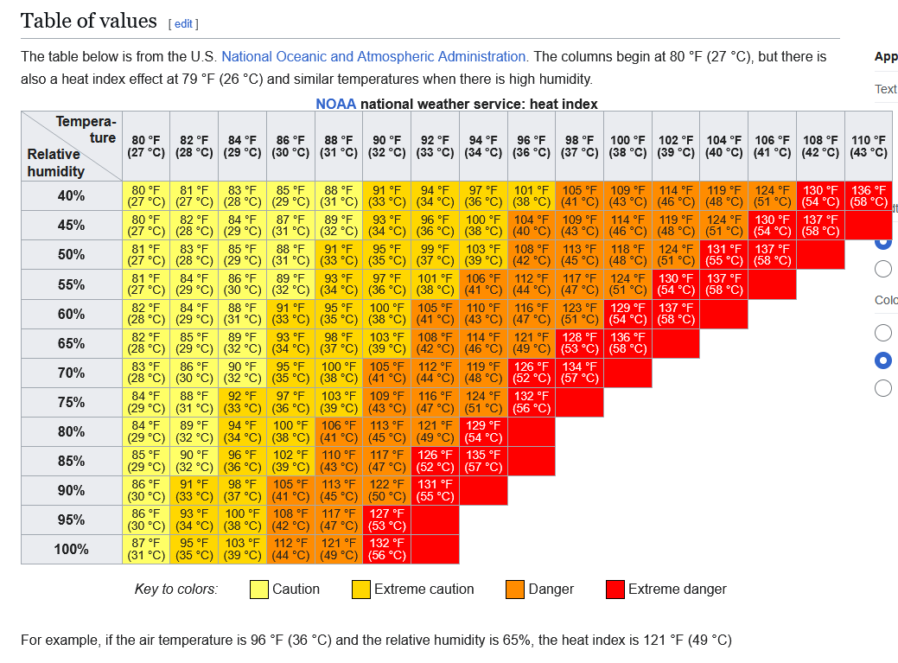
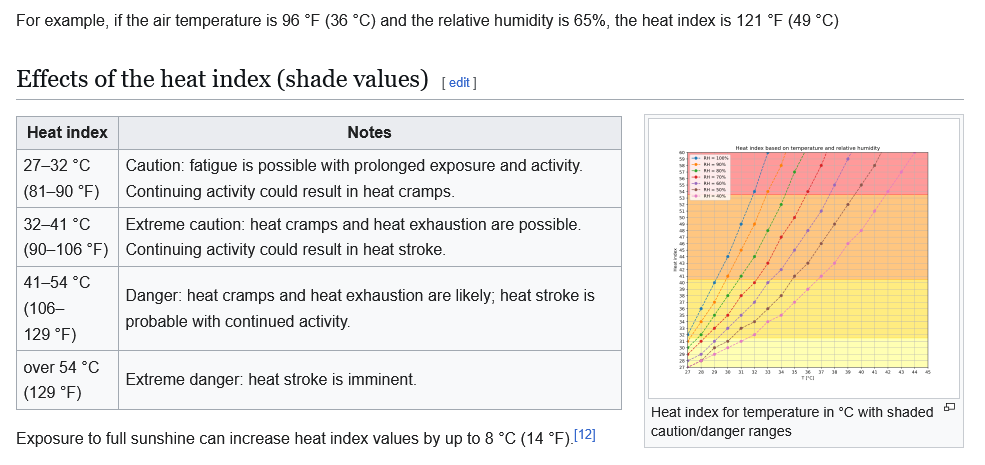
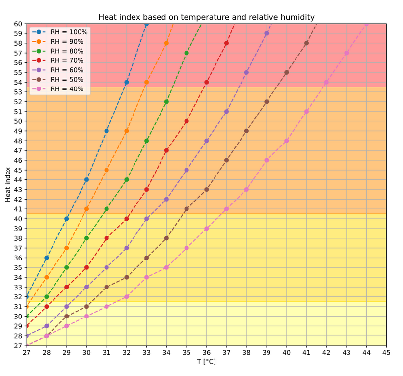
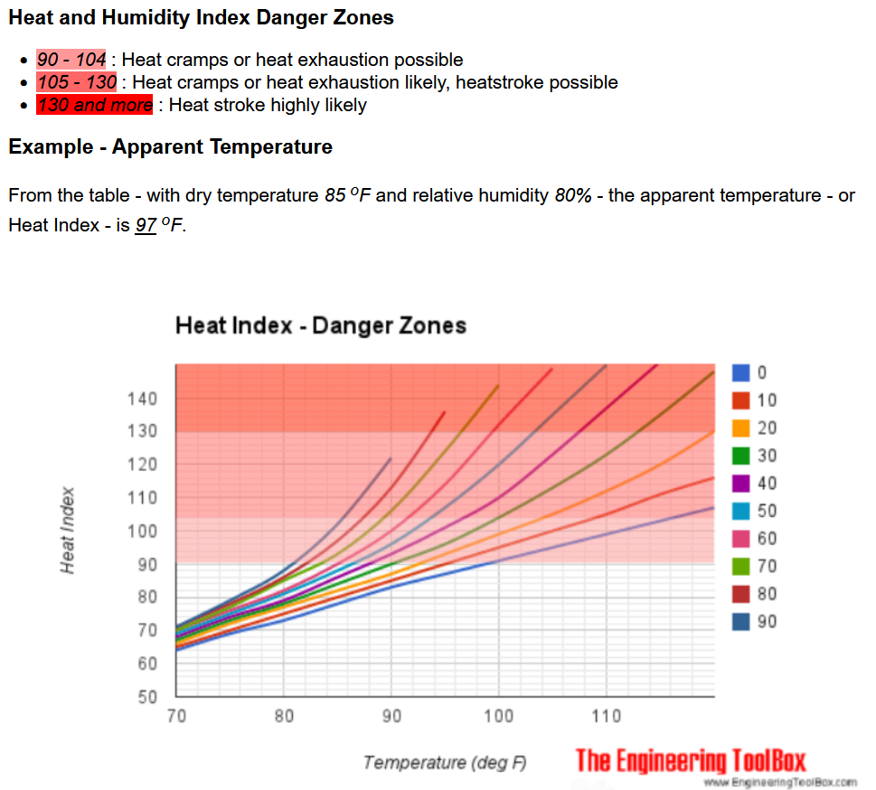
Note: ###
Further discussions on factoring in Humidity to air temperature
From TC 1.8.25, Claude AI:
"Feels like" temperature (also called apparent temperature, heat index, or wind chill) is calculated using formulas that account for how environmental factors affect human perception of temperature.There are different calculations depending on conditions:Heat Index (hot weather): Used when it's hot and humid, typically above 80°F (27°C). The most common formula incorporates air temperature and relative humidity:HI = -42.379 + 2.04901523T + 10.14333127R - 0.22475541TR - 6.83783×10⁻³T² - 5.481717×10⁻²R² + 1.22874×10⁻³T²R + 8.5282×10⁻⁴TR² - 1.99×10⁻⁶T²R²Where T = temperature in °F and R = relative humidity as a percentage.Wind Chill (cold weather): Used in cold conditions with wind, typically below 50°F (10°C):WC = 35.74 + 0.6215T - 35.75(V^0.16) + 0.4275T(V^0.16)Where T = air temperature in °F and V = wind speed in mph.The reasoning behind these calculations:TC 10:04
High humidity makes you feel hotter because sweat doesn't evaporate as efficiently
Wind makes you feel colder because it increases heat loss from your body
Both formulas are based on studies of human physiology and how the body regulates temperature
Weather services use these formulas to give you a more accurate sense of how the weather will actually feel on your skin, rather than just the air temperature measured in shade.
Heatwave advice
During a heatwave the following advice is recommended.
Siestas
Siestas lower your metabolic rate and therefore you produce less heat.
Changing location
Larger houses with courtyards typically have thermal diversity, which means temperatures are different in different parts of the house. Occupants can utilise this by moving to a cooler area in the building, for example northeastern rooms could be cooler during evenings.
Taking a shower
Taking a shower helps cool the body through evaporative cooling. However, a study showed that this impact is temporary and goes away within 20 minutes. The water must be tepid or lukewarm to avoid the body responding by constricting your blood vessels, which prevents you from releasing your heat.
Evaporative cooling
Evaporative cooling works in hot dry climates as it increases the humidity in the air, which lowers the dry bulb temperature. This only works where there is a difference between wet and dry bulb temperature, and the maximum performance depends on what the wet bulb temperature is. Evaporative cooling could be through an evaporative cooling air conditioner, sprinklers and misters, or a fountain. This is because the water droplets need to be agitated and dispersed into the air to be more effective. Additionally, still water poses risks like becoming a mosquito breeding ground.
Fans
Fans increase air speeds, which aids in sweating. This is further explored in the air speed section of thermal comfort. A key consideration is ensuring the occupant is facing the middle of the fan, as air speeds are significantly lower when the person isn’t directly in front of the fan. This could require using stand/ desk fans in addition to the ceiling fan.
Closing windows and curtains during the day
While people in hot climates are used to closing windows and heavy curtains during midday, this adaptive behaviour is not intuitive in milder climates. Curtains limit the amount of solar gain entering the space. However, ideally, you want to stop the solar gain before it gets into the building through external shading. This is because once it is inside, it is harder to lose that heat.
Opening windows overnight and evenings
As temperatures cool down in the evening, it’s important to open the windows to allow the thermal mass in the building to release its stored heat. If this process doesn’t happen, the building will be hotter the next day.
Creating a shelter with batteries and solar panels
In many cases, due to power cuts, it’s necessary to rely on solar panels to power one space that acts as a shelter. The panel/ battery needs to be connected to a socket, a light source and a fan.
Thermal comfort models
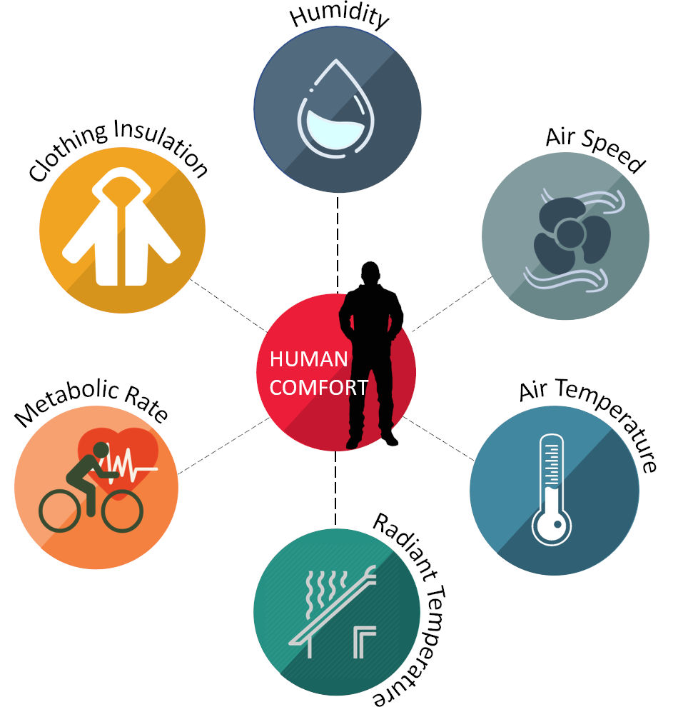
According to the ISO standard 7730 definition, thermal comfort is the “condition of mind which expresses satisfaction with the thermal environment”. There are currently two main models that most standards are built upon: The steady-state heat balance model and the Adaptive comfort model. The steady state heat balance model theorises that a person’s thermal comfort can be measured by calculating the impact of specific factors (shown in the image above) on the ‘thermal load’ that impacts people’s own internal thermal regulation systems. By distilling it into tangible things that you can measure, this model makes it easy of HVAC engineers to size their heating and cooling systems. However, field research has shown that people are comfortable in much larger ranges than the mathematical model predicted. Thus, the adaptive comfort model was born, it’s based on the idea that in addition to the factors above, people actively (and subconsciously) change their behaviour and environment to aid the thermal regulation process. So instead of viewing comfort as a simple balancing scale, it’s more a continuous feedback loop (shown below).
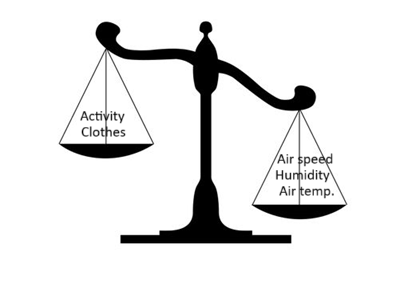
Heat balanceVS
Feedback loop
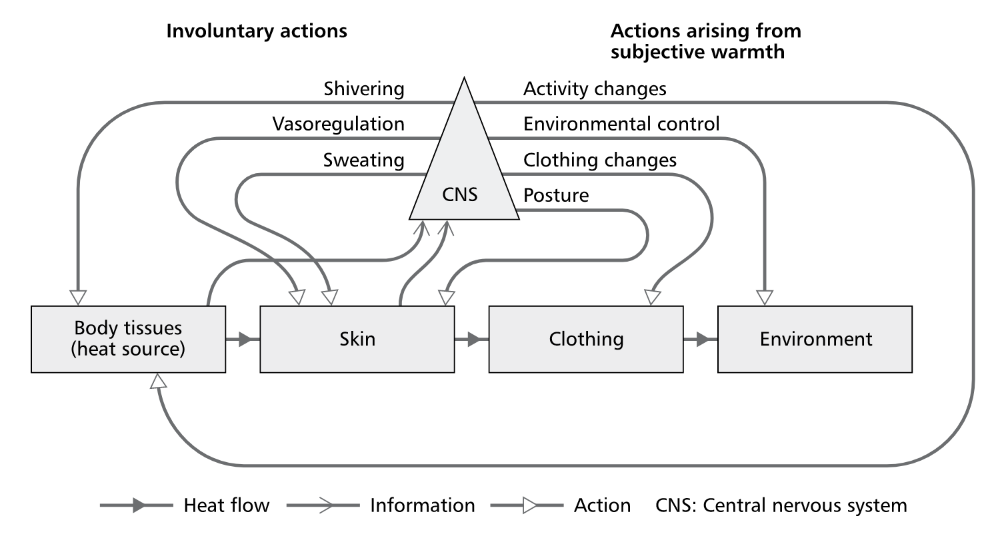
What the feedback loop diagram is saying is that your body changes the situation at all 4 levels of heat transfer from your internal body to skin, to the clothes you wear and finally the environment surrounding you. At the body level, you can shiver to produce heat or rub your hands to create some heat from the movement. At the skin level, you can sweat, change the blood flow rates to different parts of the body or change your posture. For example, when it’s very cold, you huddle and curl up into a ball, to preserve your heat, but when its hot you might spread out while lying down on the bed. Your clothing can be added or removed to adapt to the surrounding temperatures. Finally, you can change your environment by opening windows, finding a better space, or closing the curtains for example.
Clothing
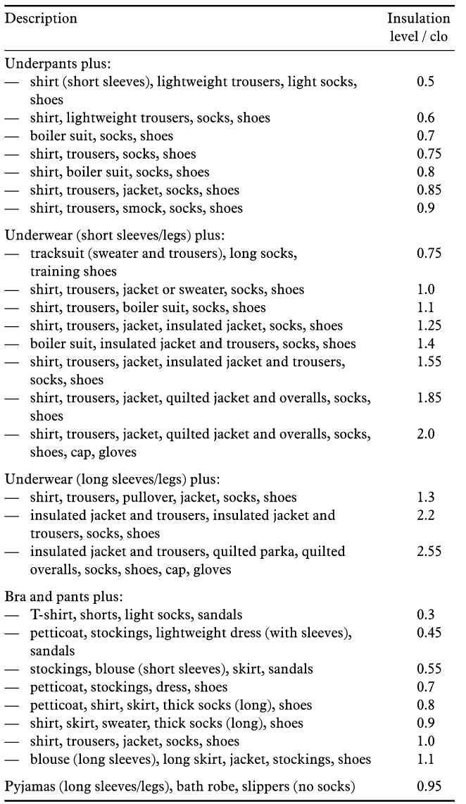
According to the ASHRAE 55-2010 and the BS ISO 9920. The clothing level can be estimated in measurements of ‘clo’. The table below shows the clo equivalent to typical ensembles. Where people wear traditional clothes like turbans and saris, some local studies offer an equivalent clo. For a typical designer the key benefit in understanding this is to check that any local surveys were based on clo levels typical of the project they are working on. For example, if a local survey was conducted in people’s homes, it would mean people were likely to wear less clothes than they would in an office with a suit and tie policy. You can use the clo values in the Climate-Consultant software to help you assess the strategies available to achieve comfort.Activities
How much heat you emit from the surface of your body depends on what you’re doing. Heat will transfer from a warmer body with higher temperature to a colder body with lower temperature. Activity level is measured in ‘met’ units, which is 60 Watts per square metre (W/m2). That specific number comes from the amount of energy you produce sitting, which is the most common activity. During heatwaves, taking a nap is an effective way to reduce your metabolic rate and help cool down. On the other hand, moving can help keep you warm in colder weather.
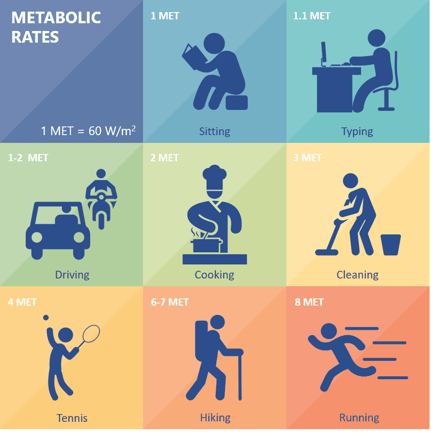
Humidity
Air that is more humid, makes it harder to sweat. This is why people can tolerate higher temperatures in hot dry climates.
Air speed
Higher air velocities help you sweating by making evaporation happen faster. This is especially important in humid areas. However, after if the air temperatures exceed a certain point, the fan can no longer provide a cooling effect. This cut off point may be around 32oC-35oC for hot humid climates and up to 40oC for hot arid climates. See ‘Outstanding Research Questions’ section on this specific topic.
Air and radiant temperatures
Air temperature is the temperature of the air around you, while radiant temperatures are impacted by solar radiation either directly or indirectly reaching you. The ‘operative temperature’, often used in comfort models, is a sort of average between the two. The air and radiant temperatures are weighted depending on a factor that is derived from the air speeds in the area. So, for example, when you are inside, not near the window or any hot ceiling, and the air is still, the operative temperature is usually the same as air temperatures. That’s why data loggers, which only log air temperature, need to be placed somewhere away from heat/coolth sources to be able to use the air temperatures as substitutes for operative temperature. Although ideally you have a black globe thermometer to separately measure radiant temperatures. However, in a project with floor to wall windows for example, the radiant temperatures would be really high, therefore measuring just the air temperatures wouldn’t accurately reflect what the occupants are experiencing.
Appendix 2: heat waves and climate change in the global south: definitions, monitoring, and organizations
WMO Official Definition
World Meteorological Organization (WMO): Defines a heat wave as a period where local excess heat accumulates over a sequence of unusually hot days and nights.
UK Met Office Definition
- In the UK, the Met Office defines a heat wave as a period of three or more consecutive days when the daily maximum temperature exceeds a set threshold.
- These thresholds vary by region to reflect differences in climate and are updated regularly in response to rising average temperatures caused by climate change.
- This provides a useful reference model for defining heat waves contextually in Tanzania, suggesting the importance of localised thresholds and climate sensitivity when setting criteria.
Ref: https://www.metoffice.gov.uk/weather/learn-about/weather/types-of-weather/temperature/heatwave & https://www.metoffice.gov.uk/about-us/news-and-media/media-centre/weather-and-climate-news/2022/heatwave-threshold-changes
IPCC: Describes a heat wave as a period of abnormally hot weather, often defined with reference to a relative temperature threshold, lasting from two days to months.
Temperature Thresholds
Heat wave definitions typically rely on high-temperature thresholds relative to local climate baselines:- Absolute anomaly-based: e.g., exceed daily maximum by >5°C over normal (1961–1990 baseline) for ≥5 days.- Percentile-based: e.g., daily max exceeding 99th percentile of May–September historical distribution for ≥3 days.- Locally defined fixed values: e.g., ≥32°C for ≥3 days in specific areas.- Country-specific figures: India & Pakistan consider plains at ≥40°C, mountains at ≥30°C, for ≥5 days.
Monitoring and Recording
National Meteorological and Hydrological Services (NMHSs) select thresholds based on local climatological baselines and maintain records. Global organizations:- WMO/WHO collaborate through the Global Heat Health Information Network (GHHIN).- WMO issues the annual 'State of the Global Climate' report.- IPCC references thresholds and observational trends in Assessment Reports.- Countries operate formal Heat-Health Action Plans guided by WHO-WMO.
Why It Matters for the Global South
Regions like East Africa, India, and Pakistan face heightened risks from climate change, with heat waves becoming more frequent and severe. Monitoring gaps remain significant, with WMO reporting that half the world's population lacks access to early-warning systems, particularly in the Global South.
Central Coordinating Body
The World Meteorological Organization (WMO) is the primary authority for defining heat waves, setting guidelines, coordinating data collection, and partnering with WHO for heat-health warning systems through GHHIN.
Summary
Aspect | Key Info--------------------- | ---------Definition | Heat wave = 2–3+ days of unusually high temp vs local baselineThresholds | Based on anomalies (e.g., +5°C) or percentiles (90th/99th)Monitoring | NMHSs implement; WMO/WHO set global best practicesCentral Body | WMO, working via GHHIN/WHOGlobal South Issue | High vulnerability; warning systems often lacking
Actionable Starting Points
- Visit WMO’s “Heatwave” page for official definitions and resources: https://wmo.int/topics/heatwave2. Review the WMO-WHO Heat-Health Warning System guidance: https://ghhin.org/wp-content/uploads/WMO_WHO_Heat_Health_Guidance_2015.pdf3. Consult NMHS documentation or national Heat-Health Action Plans for region-specific thresholds.
Appendix 3: technical R&D brief for air-conditioning and ventilation for hot and humid climates
1. Objective
Develop a prototype air-conditioning (AC) unit optimised for high-temperature, high-humidity environments such as those found in parts of Tanzania and similar regions. The system should:
- Cool indoor air effectively,
- Remove excess humidity efficiently,
- Introduce fresh outdoor air with minimal added energy load,
- Operate reliably with minimal maintenance and energy input.
2. Core Design Challenge
In hot and humid climates, thermal comfort depends on both temperature reduction and moisture removal. Standard AC units often:
- Overcool air to achieve dehumidification (wasting energy),
- Or fail to adequately remove humidity (leading to discomfort and mould growth).
- The design must balance cooling and dehumidification efficiently.
3. R&D Focus Areas
A. Cooling and Dehumidification Balance
- Design for independent control of temperature (sensible load) and humidity (latent load).
- Investigate two-stage cooling systems:
- Stage 1: Moisture removal using cold coils or desiccant systems.
- Stage 2: Reheat to deliver comfortable air temperature supply.
- Use variable-speed fans and compressors for energy-efficient modulation.
- Target Performance: - Indoor air temperature: 26–28°C - Relative humidity: 50–60% - Lower energy use than typical single-stage systems
B. Fresh Air Ventilation with Low Energy Penalty
Fresh air is essential for indoor air quality but increases the cooling and dehumidification load.
Ventilation Options: 1. Integrated into AC Unit: - Use heat and moisture recovery ventilators (HMRVs) or desiccant-based intake systems. 2. Separate Systems: - Trickle vents (possibly with moisture control features), - Stand-alone energy recovery ventilators (ERVs), - Solar-powered extract and intake fans.
Ventilation Target: - Supply 10–20 m³/h per person of fresh air - minimise additional cooling and moisture load
4. Context and Practical Constraints
Environmental Conditions: - Outdoor air: 30–35°C, 70–90% RH - Power supply: Intermittent or expensive - Maintenance: Should be low-frequency and simple - Noise: Quiet operation is preferred in domestic spaces
Materials and Build: - Corrosion-resistant components - Modular, repairable parts - Suitable for potential local assembly in East Africa
5. Outputs Required
- Concept drawings and control schematics
- Thermal and energy performance simulations
- Bill of Materials (BOM) with approximate costing
- Working prototype for field testing
- Maintenance and installation guides suitable for non-specialist users
6. Success Criteria
- Indoor climate: 26–28°C, 50–60% RH
- Fresh air provision: 10–20 m³/h per person
- Energy use: At least 30% less than conventional AC
- Ease of use and maintenance
- Robustness and reliability in local conditions
ARC technical meeting: cooling individual rooms in a Tanzanian context
Date: 1.8.25
Participants: Andy Simmonds, Toby Cambray
Meeting was recorded
Basic architectural unit for cooling brief
- Agreed to focus on individual rooms as the basic unit in the ARC three-zone model.
- This aligns with how people already manage thermal comfort in hot climates—cooling individual rooms, particularly during heat waves.
Scenario Development
- Develop a scenario with a 10–15-year horizon, in line with:
- - Typical mechanical services lifespans
- - Copernicus climate projections
- Objective: Define a "worst-case" heat wave scenario for Tanzania, including:
- - Duration (e.g. two weeks)
- - External temperature and humidity extremes
Comfort Threshold & Success Criteria
- Current success criteria are based on passive-only measures.
- Use current dry bulb threshold of <28°C, with a tentative proposal to incorporate 60% RH as a hard humidity target (since we are talking about equipment set points).
- Aim during heat waves: return indoor conditions to the comfort threshold using the simplest, minimal amount of equipment available locally, but also minimizing peak power and running costs to ‘sustainable’ levels for reduced community (electrical grid, heat island effects) and occupant benefit.
Equipment Considerations
- Ideal solution:
- - Standard or higher-end mini-split air conditioning unit with both:
- - Sensible cooling (temperature)
- - Latent cooling (humidity control - ability to set room humidity)
- Investigate local availability of such units.
Ventilation & Airtightness
- Avoid using mechanical ventilation with heat recovery if possible.
- Explore:
- - Achievable airtightness levels in Tanzanian construction.
- - Typical leakage paths (e.g. glass louvre or other types of windows, door gaps).
- - Use of dedicated "trickle vents" or accounting for cumulative construction gaps around windows and doors to allow fresh air supply.
- Consider mechanical extract ventilation:
- - Define required extract rates
- - Explore the use of standard locally available room extract fans
- - Investigate whether these can be wired to operate with AC units
Modelling Needs
- Suggest modelling (PHPP or ‘longhand’?) typical room types to:
- - Assess peak power demands
- - Estimate running costs during heat waves
Adaptation vs. Heat Waves
- Produce educational text for science module on ‘human adaptability to increased heat’ versus ‘human heat-stress’:
- - Gradual adaptation to climate change over time
- - Inability to adapt rapidly to short-term heat wave extremes
- Develop scenarios explaining both but state that ARC is prioritising short-term heatwave measures with a longer-term approach to climate change requiring more extensive future adaptations.
Actions
- - TM52 and TM59 overheating criteria (CIBSE)
- - CIBSE definitions of overheating criteria
- - ARC Tanzania to describe local perception of heat waves
- - To analyse village monitoring data to:
- Identify potential past heat wave-like periods and compare with any current Tanzanian benchmarks, perhaps referencing the Copernicus site data: Use Copernicus Climate Change service, for CC projects and reference our own (weather station) data. To research – using CC projection and make into heatwave scenario. https://climate.copernicus.eu/
Current state of standard technology - ChatGPT
- “Standard air conditioning (AC) units in Tanzania — typically split-system or window units used in homes, offices, and hotels — do incorporate dehumidification as a byproduct of their cooling function, but not usually as a controllable, standalone feature.
- Key points:
- Passive dehumidification during cooling:
- When the AC cools the air, water vapor condenses on the cold evaporator coils.
- This process removes moisture from the indoor air, thus reducing humidity.
- The amount of dehumidification depends on factors like coil temperature, air speed, and indoor humidity.
- Lack of dedicated dehumidification mode:
- Most standard units do not include a "dry mode" or humidity control setting tailored to maintain a specific relative humidity (RH).
- Higher-end or inverter models (often imported from brands like Daikin, LG, or Panasonic) may include a "Dry" or "Dehumidify" mode, which prioritizes moisture removal with limited cooling.
- Energy and design limitations:
- In humid coastal areas like Dar es Salaam, standard AC units may not remove sufficient moisture to maintain indoor RH in the 40–60% range optimal for health and comfort.
- Oversized or poorly controlled AC units often cycle on and off quickly, limiting moisture removal compared to steady-state operation.
- Installation practice:
- Many installations prioritize cost and cooling capacity over indoor air quality (IAQ), so dehumidification is often incidental rather than intentional.
- “Summary:
- Yes, some dehumidification occurs, but standard AC units in Tanzania are not typically designed or installed with deliberate humidity control in mind. Where humidity is a serious concern — for comfort, mould control, or preservation of materials — dedicated dehumidifiers or properly sized and controlled AC systems (preferably with inverter drives and humidity sensors) are more appropriate.
- Claude:
- “Mini split AC units are deliberately designed to dehumidify air as part of their cooling function, not just incidentally. This is especially important in hot, humid climates where latent heat removal (dehumidification) can account for 20-40% of the total cooling load.How they're designed for dehumidification:The evaporator coil is specifically sized and designed to operate at temperatures below the dew point of the incoming air. As humid air passes over the cold coil, water vapor condenses out and drains away through the condensate system. This process removes latent heat from the air.Key design features:
- Variable speed compressors allow the unit to run longer at lower speeds, which increases dehumidification effectiveness compared to simple on/off cycling
- Condensate drainage systems with pumps or gravity drains to handle the water removal
- Coil design optimized for both sensible cooling (temperature reduction) and latent cooling (moisture removal)
- However, there's a balance issue:In very humid climates, mini splits can sometimes struggle with dehumidification when the sensible cooling load is low (like during mild but humid weather). The unit may satisfy the temperature setpoint before adequately dehumidifying, leading to a cool but clammy feeling.Solutions for high humidity:
- Many newer units have dedicated "dry mode" settings
- Some have enhanced dehumidification features
- In extremely humid climates, supplemental dehumidifiers are sometimes needed
- So, while dehumidification is an intentional design feature, the effectiveness varies by model and operating conditions. It's not just a happy accident of the cooling process.
Technical reminders
- Mini-split systems:
- - Heat transfer is via Air to air (A2A) systems
- - One outdoor unit, one or more indoor units
- - Use refrigerant with pipes running inside the building
- ‘multi-split’ systems can support several indoor units from one (larger) external unit, with more extensive refrigerant pipe runs.
- Mono-block systems:
- - Heat transfer is via Air to water (A2W) systems
- - Refrigerant remains outside the building envelope
- - Use air-to-water connection (e.g. UK systems)
- In Tanzania, dehumidification is typically a byproduct of cooling air, not a controlled function
- Our interest is in systems with deliberate, optimised latent cooling for dehumidification”
Appendix 4: Definitions, acronyms
- To be drafted